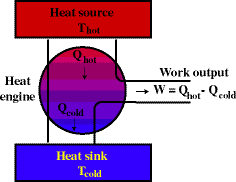

Thermodynamics
Historically this topic was treated as a branch of fluid mechanics. Heat energy was thought to resemble a liquid. In many ways this isn't a bad model. Heat energy flows with the movement of molecules whose motion also resembles a fluid. There are some important ideas, however, that are different as the notion of fluid mechanics and the conservation of energy combine to give us this topic which attempts to make order out of chaos.
| Nature of Heat | |
| Thermal Expansion (or "How does one freeze the balls off a brass monkey?") | Thermal Conductivity (or "Why you can't cool/heat your attic room?") |
| Heat Capacity (or "Why can I pick up a 200° wooden spoon but I can't touch a 100° metal fork?") | |
The energy connection. What we can do with this energy form we call heat.
| Thermodynamics | |
| Some key ideas and what we do with them [under constr] | Presentation on Thermodynamics (in class) |
The First Law of Thermodynamics defines how energy is conserved in systems that can store energy, do work, and produce or absorb heat.
The Second Law of Thermodynamics defines the direction of thermal flow and, indeed, the direction of time's arrow. Calculus Warning!
The Third Law of Thermodynamics defines the amount of heat that can actually do useful work.
Thermodynamic Problems worked out in detail from Western Washington University |
|
How can we study the work we can get out of such systems? …with heat engines of course!
| Heat Engines | |
| Your basic heat engine: |  |
| The Carnot Cycle is the most basic cycle that a heat engine can perform to get work. | The Otto Cycle is one that mimics the way an automobile engine operates. There are some other engines here as well. |
Momentum
Magnetism